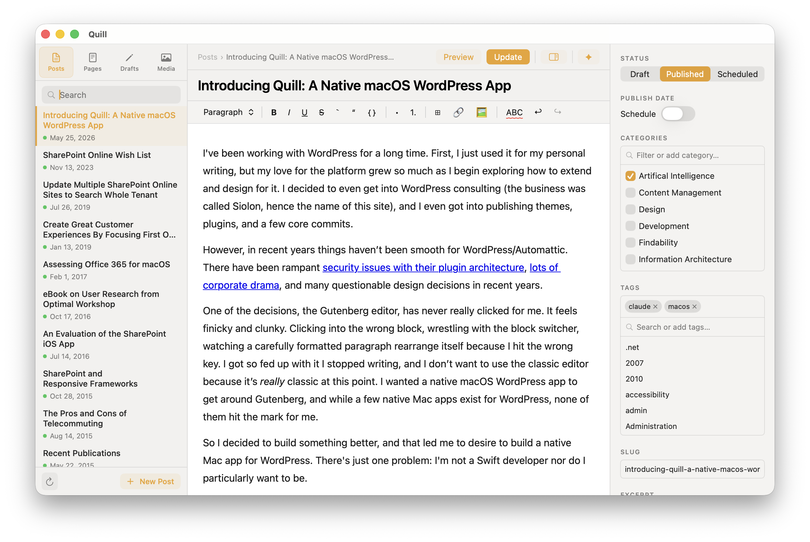

Native macOS · Free
Write, edit, and publish from a native app built for macOS — not a tab in your browser. Connects directly to your self-hosted WordPress site via the REST API. No plugins, no third-party services, no subscription.
